플랫폼테크놀로지
이전 페이지 이동
다음 페이지 이동
MucoMAX®
HumaMAX®
HumaMAX
®
면역조절 물질인 의약신소재
γ-PGA 특징 이용,
체내 면역조절 플랫폼 기술
미생물 ‘Bacillus subtillis’에 의해 생성되는 고분자 물질로 장내 점막의 면역세포를 자극함으로써 자연살해세포의 활성을 증진시키는 γ-PGA를 이용한 핵심원천기술
천연 아미노산 고분자 정제 물질 “γ-PGA(Poly-γ-glutamic Acid)”의 면역조절 효력 기반 신약개발 플랫폼 기술
필수 아미노산인 글루탐산이 감마-펩타이드 결합을 통해 반복적으로 연결된 구조
면역조절 효력 기작 : TLR4 매개 ① 선천면역 유도 ② 획득면역 증강 ③ 종양미세환경(TME)의 우호적 개선
GRAS(Generally recognized as safe) 미생물인‘Bacillus subtilis Chungkook-jang(바실러스 서브틸리스 청국장)
특허균주에 의해 생산됨
개발 중인 적응증
LSIL 치료제 (BLS-H01) : 임상3상 진행
적응증 확대 추진: 면역관문억제제(ICB, Immune Checkpoint Blockade), 세포치료제 등과의 병용 종양 치료
폴리감마글루탐산
(poly-γ-glutamic acid; γ-PGA)
식용의 아미노산 고분자소재로 우리나라 고유의 '청국장' 같은 콩 발효식품에서 발견되는 천연물질
식용안전성이 확보된 GRAS (generally recognized as safe) 미생물인 Bacillus subtilis Chung - kookjang 에 의해 생산 (바이오리더스 특허 균주)
천연물이지만 발효, 정제 공정을 통해 고분자량 (평균 약 2,000 kDa) γ-PGA 대량 생산 공정 확립 (대한민국 10대 신기술 인증)
폴리감마글루탐산에 의해 면역반응 증가로 항암, 항바이러스, 염증 질환에 효과가 있음
폴리감마글루탐산은 보습기능, 미네랄 흡수촉진 기능, 체내의 조직성분인 히알루론산의 분해효소 활성 저해기능 등 건강학적 기능도 있음
경구 복용
안정성이 높고, 투여가 용이함
경구 투약을 통한 소장에서의 흡수
소장 점막에 존재하는 면역 세포인 대식세표와 수지상세포의 활성화 유도
폴리감마글루탐산에 의해
면역반응 증가
항암 효과
항바이러스 효과
염증질환 억제 효과
Innate immunity
(선천면역 증강)
γ-PGA는 장 점막세포를 통해 선천면역 기능을 증강
생체내의 면역기능을 유지하는 면역세포인 대식세포 (Marcrophage)와 자연살상 세포(NK cell)를 활성화시켜 면역기능을 증강
항원제시세포 활성화

Adaptive immunity
(획득면역 유도)
성숙 수지상세포의 성숙을
유도하여 획득면역 증가